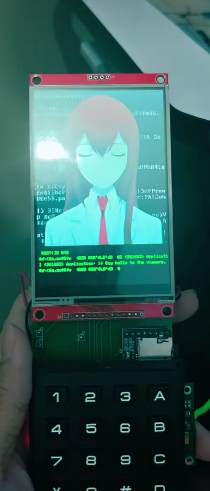

My Course Works
Course Work 1
An infographic illustrating the potential impact of Physical Science Courses in the Computer Engineering curriculum. Physical Science Courses include subjects such as Physics and Chemistry. Through Chemistry, students can learn about properties of materials, chemical reactions, and laboratory procedures. Through Physics, students can learn about mechanics and motion, electricity and magnetism, and energy and work. These lessons can be applied in fields where computer systems interact with the physical world.

Course Work 2
A reverse engineering analysis of a Bass Guitar Amplifier. Through reverse engineering, one can learn about the design and functionality of any technology or gadget they wish to analyze. This is because reverse engineering is fundamental to engineering as a whole, not just in Computer Engineering. In reverse engineering, one must consider the Engineering Design Process, which is a series of steps that engineers follow to come up with a solution to a problem. In this case, the objective is to understand how a bass guitar amplifier works, why it is needed, and how it can be improved.

Course Work 3
An informative video about an emerging technology: Human Augmentation and Exoskeletons. These are technologies that enhance human capabilities and can be used in various fields such as healthcare, military, and industrial applications. The video discusses the potential benefits and challenges of these technologies, and how they are being developed and implemented today.

My Projects
Design and Development of a Low-Cost P-Wave Detection System for Early Residential Earthquake Warning
[COURSE PROJECT] - The course project that I worked on with my groupmates. Quakely is a low-cost P-wave detection system that can be used to provide early warning for residential earthquakes. The system uses an MPU-6050 accelerometer to collect acceleration data, which is then processed by an Arduino Uno or Nano microcontroller through a simplified STA/LTA algorithm to detect signal changes from background motion.

Development and Evaluation of Project WOWS
[RESEARCH PROJECT] - The Grade 10 Research Project that I worked on with a group that I led. Project WOWS is a low-cost, portable, and easy-to-use and replicate water level monitoring system that can be used to provide early warning for floods. The system uses three float sensors that acts as a three-tier water level monitoring system. When water reaches a certain level, the float sensor will trigger a speaker to sound an alarm.

RC Car
[PERSONAL PROJECT] - A personal project that I worked on with a friend during summer break after graduating High School. The RC Car is a remote-controlled car controlled using a Flysky FS GT3B controller and receiver. The car uses an Arduino Nano microcontroller to control the speed and direction of the car, and is powered by 4 1.5V AA batteries. The chassis is made of wood (repurposed from a small desk shelf organizer) and the motors are small TT gear motors.

Project: AMADEUS
[FUTURE PROJECT] - A passion project I am preparing to work on. Inspired by STEINS;GATE 0 Project Amadeus. It is an AI chatbot that can be used to simulate conversations with Makise Kurisu, a character from the visual novel and anime series STEINS;GATE. The project will be built around a device that resembles the Okabe Rinato's phone and will be powered by a Raspberry Pi 4 or Arduino Uno.

About Me
Greetings! My name is Benedict Tipan, and I am a first-year Computer Engineering student at Mapua University. I am an aspiring computer engineer, specializing in both hardware and software development. I have a strong passion for learning diverse topics, particularly in technology, language, and literature. Some languages I've been learning include Russian, Swedish, German, and Japanese.
Ever since I was a child, I have always wanted to become a sort of "jack-of-all-trades". I started studying different skills, particularly in technology. And I learned how to work with technology through my projects. I have been met with many opportunities to grow during high school. One such opportunity was being able to join a work immersion program. I was able to visit the Technological University of the Philippines - Taguig and learn how the work industry works under the guidance of the Electronics Engineering Department.
Eventually I found myself here in Mapua University. And so far, my journey has had its ups and downs, but I managed to pull through because if I wanted to see how far I can go, then I musn't stop now. The computer engineering program (and university life in general) has been a testament to my perseverance. But I will pull through. God is watching. So I will give him a good show.